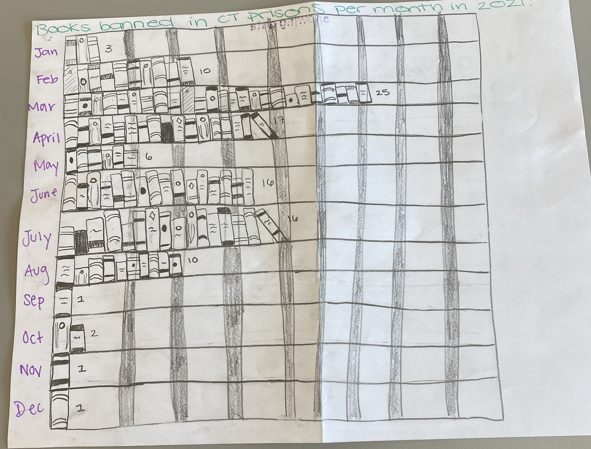

Subhed here
For my DataWrapper chart I decided to make a bar graph. I titled it "Books banned in CT prisons per month in 2021 to introduce what this graph was explaining. I researched data on which books were banned in Connecticut prisons in the year 2021 and also collected data on how many books were banned per month. This graph shows how many books were banned each month, with March being the highgest with 25 books. I chose this kind of graph because it is easy to differentiate between the months and it is also evident which month is the greatest and lowest. If I were to make this chart again, I would have changed the color or added another element because it is slightly boring. However, I was proud of my dataviz chart that I made about this data. I recreated the same bar graph but made it look like a bookshelf behind a jail cell to correspond with my title and the data. I also individually drew a book for each book banned per month; I drew three seperate books for January and so on. I think this made the graph more interesting and appealing to an audience. It also made it unique because it wasn't just a generic graph. If I were to make it again, I would've added more color to the books.
<<<> 